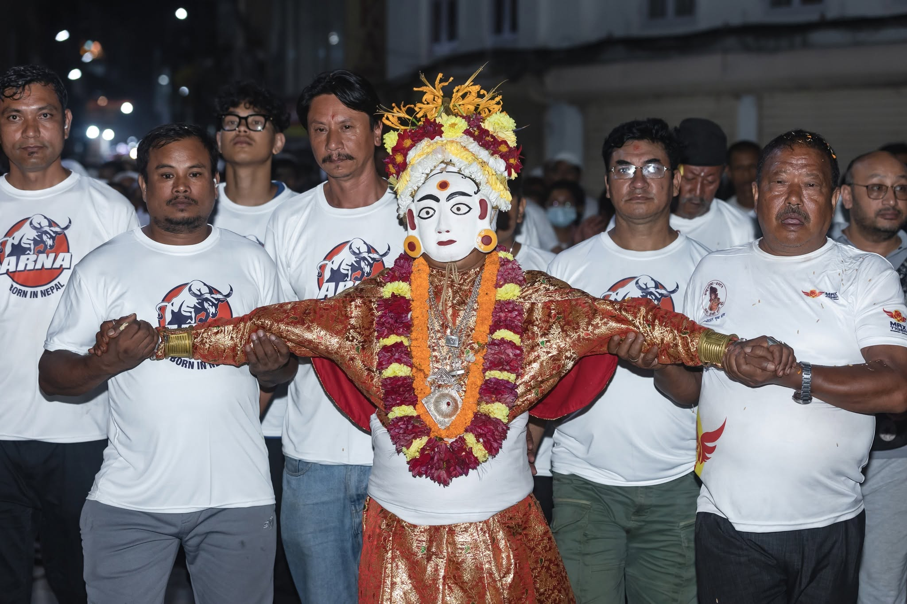
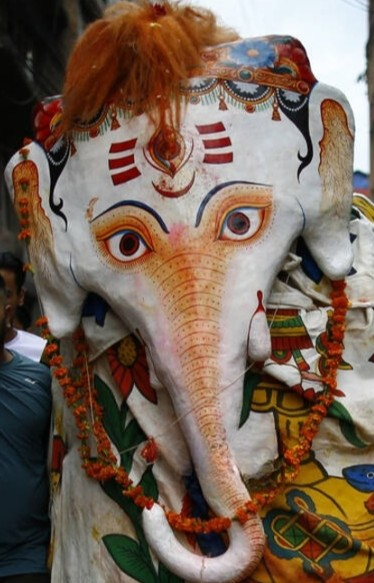
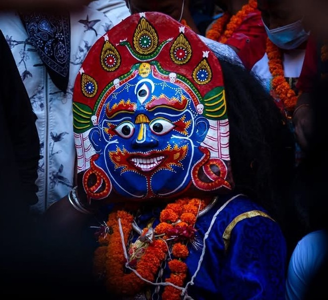

Deities





Counting down to 23 September 2026
Designed & Developed by Utsav Khadgi (Tyson)
© 2026 All Rights Reserved




Indra Jatra is one of the most vibrant and celebrated festivals of Kathmandu Valley, bringing together history, culture, tradition, music, and devotion.
Celebrated mainly in Kathmandu, the festival is famous for its magnificent processions, traditional dances, masked performers, the Kumari the Living Goddess and the rich traditions of the Newar community.
More than just a festival, Indra Jatra represents the identity, history, and spirit of Kathmandu, bringing generations together to celebrate traditions that have been preserved for centuries.
The Kumari, known as the Living Goddess, is one of the most sacred and unique traditions of the Kathmandu Valley. Revered as the living manifestation of the goddess Taleju, the Kumari holds a special place in the religious and cultural life of the Newar community.
During Indra Jatra, the Kumari becomes one of the central figures of the festival. She is carried through the historic streets of Kathmandu in a magnificent chariot procession, allowing devotees and visitors to witness this remarkable tradition.
Kumari Jatra represents centuries of faith, devotion, and living heritage that continue to define the cultural identity of Kathmandu.
Majipa Lakhey is one of the most famous and exciting figures associated with Indra Jatra. Known for his powerful masked appearance and energetic dance, Lakhey moves through the streets of Kathmandu, creating an unforgettable atmosphere during the festival.
Although Lakhey may appear frightening with his large mask and dramatic movements, he is traditionally regarded as a protector of the community.
The Majipa Lakhey dance is an important part of Kathmandu's cultural heritage and represents the energy, mystery, and spirit of Indra Jatra. For many people, the appearance of Lakhey is one of the most anticipated moments of the festival.
Halchowk Bhairav is a powerful and significant deity associated with the rich religious traditions of the Kathmandu Valley. Bhairav is regarded as a fierce manifestation of Lord Shiva and is traditionally connected with protection, strength, and the destruction of evil.
During important festivals and cultural celebrations, the traditions surrounding Bhairav reflect the deep spiritual heritage of the Newar community.
The powerful imagery, rituals, and cultural performances connected with Bhairav demonstrate the diversity and depth of Nepal's living traditions. Halchowk Bhairav remains an important symbol of faith, history, and cultural identity in Kathmandu.
Pulkisi is another beloved and recognizable figure of Indra Jatra. Represented as a large white elephant, Pulkisi travels through the streets of Kathmandu accompanied by music, celebration, and enthusiastic crowds.
According to tradition, Pulkisi is associated with the elephant of Lord Indra and forms an important part of the stories and traditions surrounding the festival. Its playful movements and distinctive appearance bring joy and excitement to the celebrations, making Pulkisi especially popular among children and spectators.